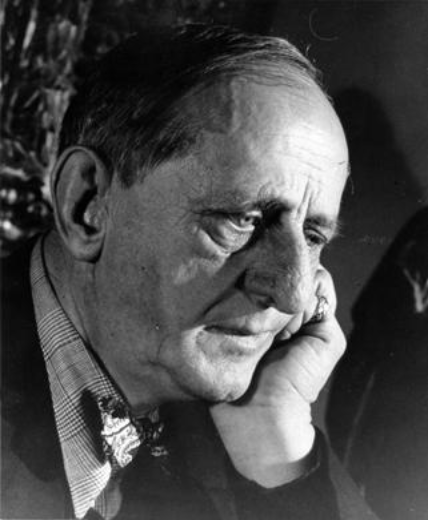

PORTLAND ART MUSEUM
 Marsden Hartley is a modernist painter and artist specializing in a series of paintings as well as poetry. Hartley combines his actions of landscapes and figures towards the natural world. Due to his interest in nature, his paintings are drawn from inspiration from personal experiences and a sense of spirituality. He also began involving himself in nature and teaching painting. Hartley moved to New York City to study painting at the New York School of Art and then attended the National Academy of Design. His talent for capturing the dynamism of the natural world led him to have his first exhibition in New York City. One of his earliest paintings from Hartley's Amerika series revolves around the idea of explaining Native American themes, including the harvest, seasons and the place of living beings in the natural world. Hartley's diverse and aesthetic style continues to make him one of the most innovative American painters.